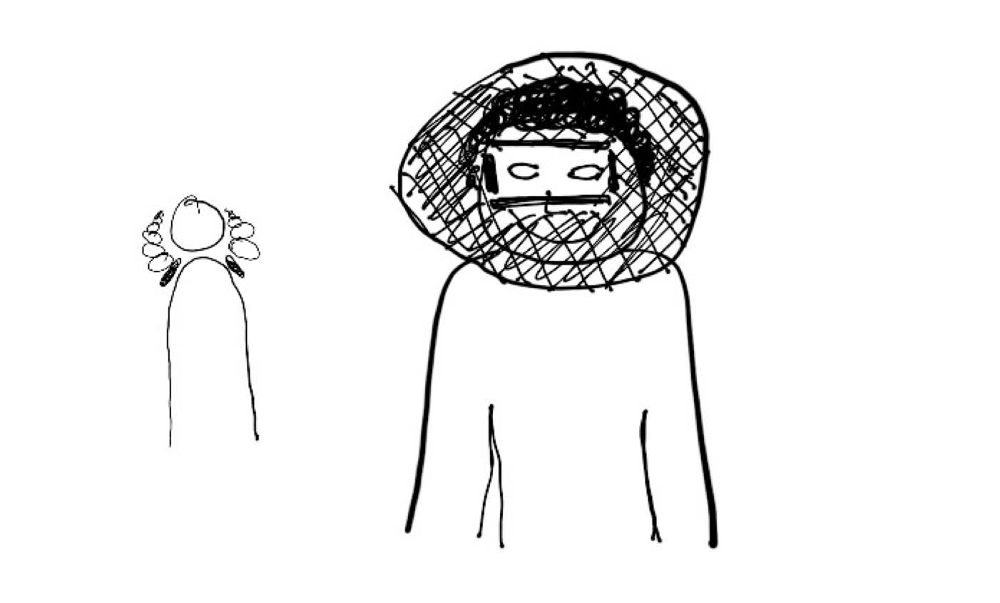
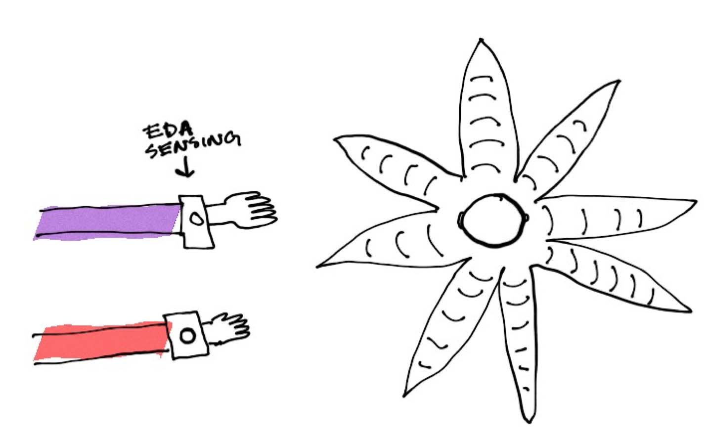
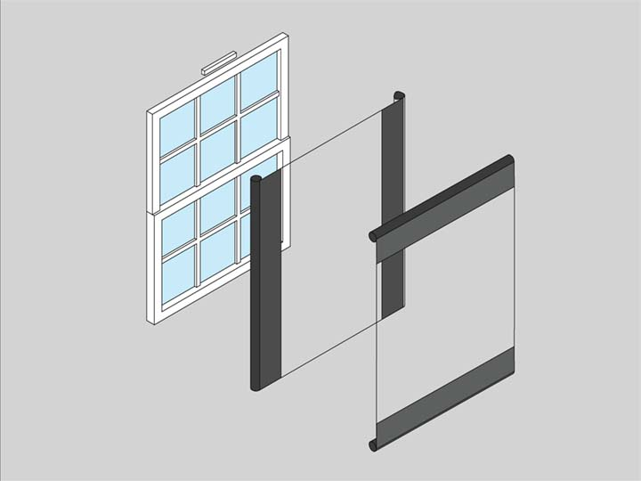
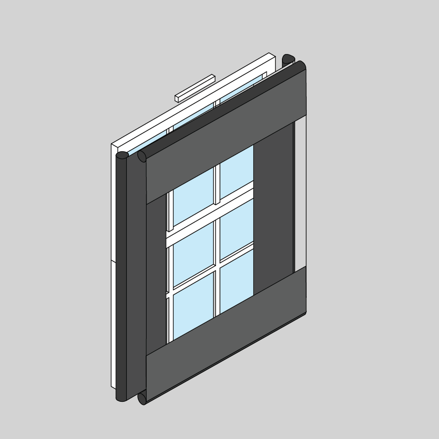

Final Project Tracking
Physiological Synchrony Blinders - 10/03/18
When two people are interacting, physiological indicators like electro-dermal activity (EDA) between the two becomes synchronized. This can indicate that two people are observing and reacting to one another.
I propose a wearable that wirelessly receives data about two individuals’ EDA synchrony, and returns their focus to each other if their attention starts to wane, as indicated by their physiological synchrony.


Sensors like the Empatica E4 can measure EDA.

Hovding’s inflatable bike helmet provides an example of a wearable technology that could be used to focus the users’ attention on each other.

Responsive Window Blinds - OUTDATED
This proposal is for a set of window blinds that could selectively focus someone’s attention on something going on outside (or selectively prevent them from seeing something).

A sensor on the interior could track a person’s location in three dimensional space. A sensor on the exterior could use machine vision to identify birds, people, or weather events. A milled frame could support blinds that are attached to motors. As the user moves through space, the blinds could be rolled or unrolled to maintain a consistent frame of view for the person.
